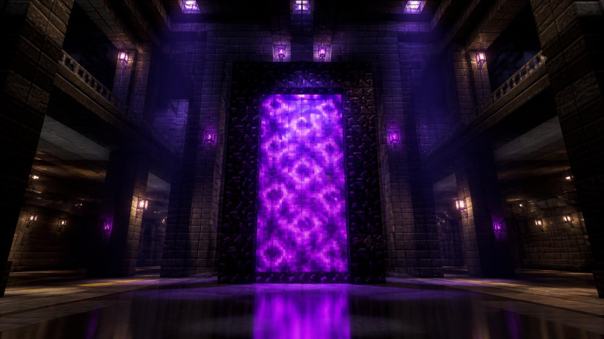

М1 · Червона
М1 · Червона
Незер Портал
Односклепінна станція мілкого закладення червоної лінії, район «Прибережний район». Відкрита 25.08.2020.

Характеристики
Лінія
М1 · Червона
Дата відкриття
25.08.2020
Тип станції
односклепінна
Глибина
15 блоків
Довжина платформи
142 блоків
Платформ
1
Колій
2
Район
Прибережний район
Координати
X: 1545, Y: 53, Z: 1783
Пасажирів на добу
2815
Опис
Станція «Незер Портал» розташована в районі «Прибережний район» та обслуговує потяги червоної лінії. Вестибюль виходить до головної вулиці району, а платформа завглибшки 15 блоків з'єднана з поверхнею двома сходовими маршами.
Архітектура
Основна риса оформлення — панорамне скління з тонованого скла та каркас із залізних блоків. Освітлення виконане у теплому спектрі, а покажчики зібрані у єдиному стилі мережі.
Цікаві факти
- На стелі викладено пікселну мозаїку розміром 705×705 блоків.
- Станція має власний годинник із редстоуну, який відстає рівно на 553 секунд на добу.
- Щодня станцією користуються близько 411 гравців.
Поруч зі станцією
- Бібліотека чарів
- Ферма заліза
- Ринок Emerald Market
- Порт вагонеток
Пересадки
Пересадковий вузол
- Червона лінія
- Станція «Незер Портал»
- Золота лінія
- Станція «Незерська Брама»
- Аметистова лінія
- Станція «Порталова Площа»
Історія станції
Як будували «Незер Портал»
-
Початок будівництва
Стартувало виймання породи та зведення тимчасових опор тунелю.
-
Стикування тунелів
Прохідницькі бригади з'єднали два перегони під землею.
-
Відкриття для пасажирів
Перший потяг прийняв пасажирів о 09:00 за серверним часом.
-
Реконструкція вестибюля
Замінено освітлення та оновлено навігаційні таблички.
Фотогалерея